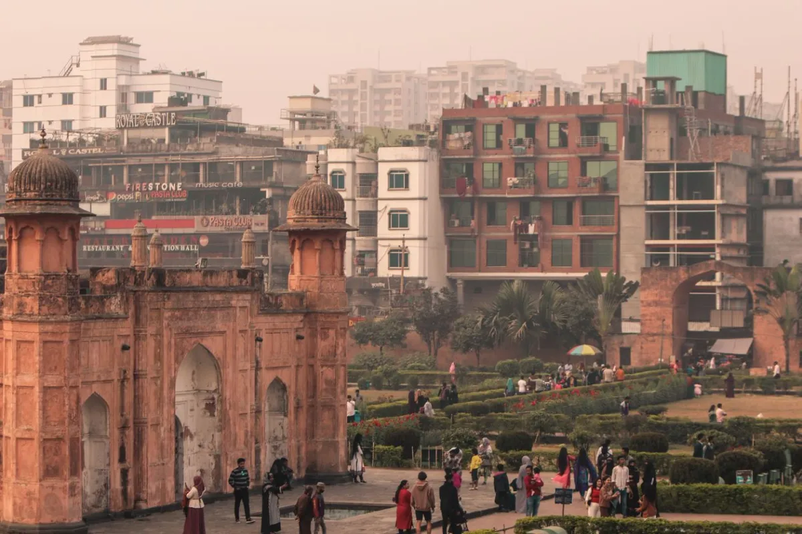

Region · The capital
Dhaka Gateway
The loud, layered capital most trips start and end in. It's a lot at first — and then it's the thing you miss.

You'll almost certainly land here. Hazrat Shahjalal International is the country's main gateway, and nearly every other region connects out of Dhaka by bus, train, launch or a short domestic flight. Spend a couple of days on either end of your trip and the city stops being an obstacle and becomes part of the story.
What not to miss
- Old Dhaka on foot. The Shankhari Bazar lanes, Ahsan Manzil (the Pink Palace) on the riverfront, the Star Mosque, and a cycle-rickshaw ride through the crush.
- Sunset on the Buriganga. Hire a small rowboat and drift through what may be the busiest working river port you'll ever see. Go when the light is low.
- Sonargaon day trip. The old capital and the abandoned merchant street of Panam City, about an hour out of town — an easy half-day.
- The modern city. The Liberation War Museum and the university quarter give you the other half of Dhaka: young, fast, and reinventing itself.
How long to stay
Two days covers the essentials on arrival; add a third if you want Sonargaon without rushing. Many travellers do two nights at the start and one at the end while connecting onward.
Getting there & onward
Dhaka is the hub. From here: overnight bus or train to Khulna for the Sundarbans, a scenic overnight train to Sylhet and the tea hills, a short flight or long bus to Cox's Bazar, or the road down through Chittagong to the Hill Tracts.
Fixed price, meet you at arrivals

Top things to book
Dhaka's most popular sites can get busy — booking tickets in advance lets you skip the queue at the gate and plan your day around confirmed entry times.
Skip the ticket queue